Exploring the power of flow models
PixNerd-XXL-P16-T2I generates 512 × 512 images. These experiments use pretrained weights; no model training is needed. The recorded run used a Tesla T4, float32 states, Euler step size 0.02, and CFG weight 7 for guided sampling.
Constructing noisy training inputs
I chose a portrait of Lin-Manuel Miranda as my test image for Sections 1.1–1.5. A single Gaussian noise tensor is reused at all three times. Interpolation scales both the image and noise: larger t preserves more of the original image.
The image is center-cropped and resized to 512 × 512. At t = 0 the interpolation returns noise, and at t = 1 it returns the original image.
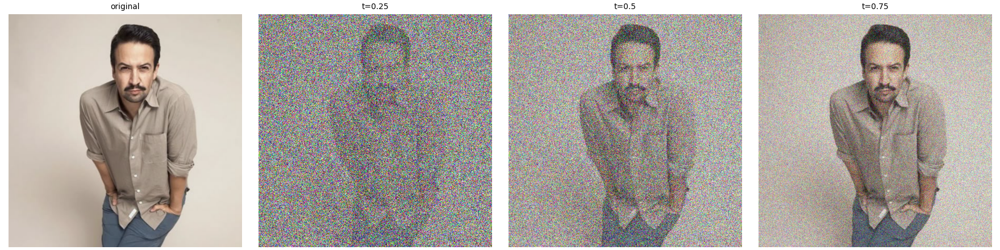
1.2 · Classical denoising
For the Gaussian baseline, restore the scaled image amplitude by dividing the noisy input by t, then blur it. Averaging nearby pixels suppresses noise but also removes edges and texture. The low-time input is hardest to recover because division amplifies its noise.
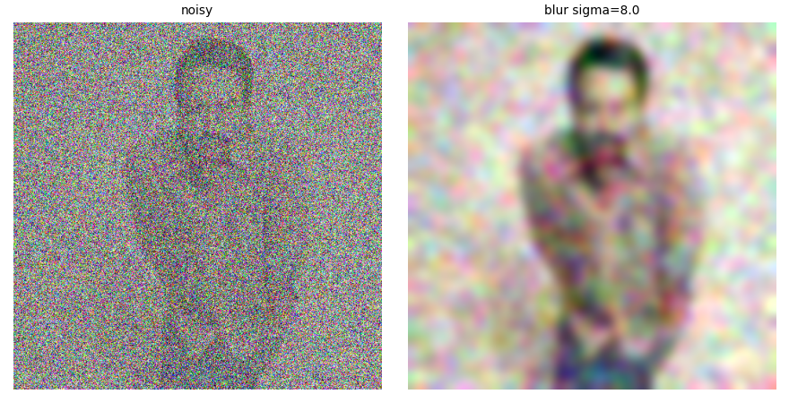
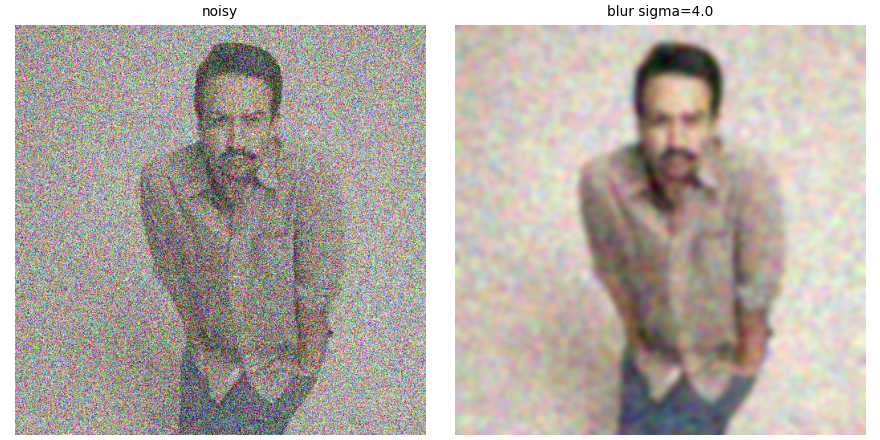
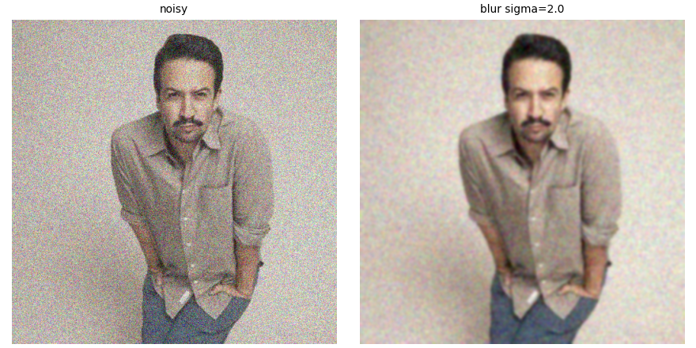
1.3 · One-step denoising
The model predicts velocity, which is extrapolated to t = 1 using the prompt “a high quality photo”. At low t the face becomes smoother and its details change; at higher t the estimate is closer to the input portrait.
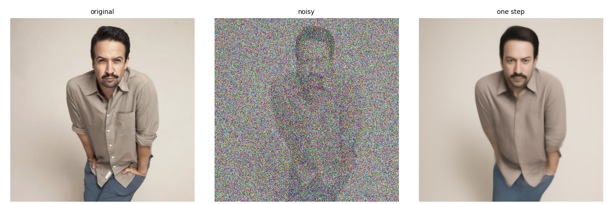
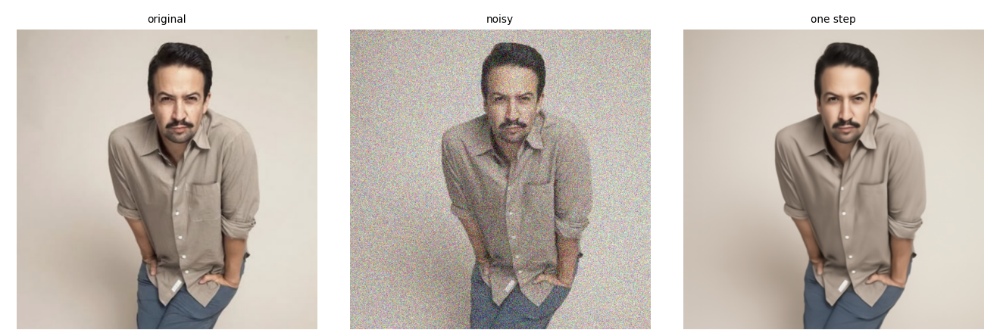
1.4 · Visualizing velocity predictions
The panels compare predicted and ground-truth updates for the saved image/noise pair. The RGB RMS error is computed per pixel between these updates. Face and clothing boundaries remain visible in the error maps, showing where the prediction differs from the exact straight-line training path.
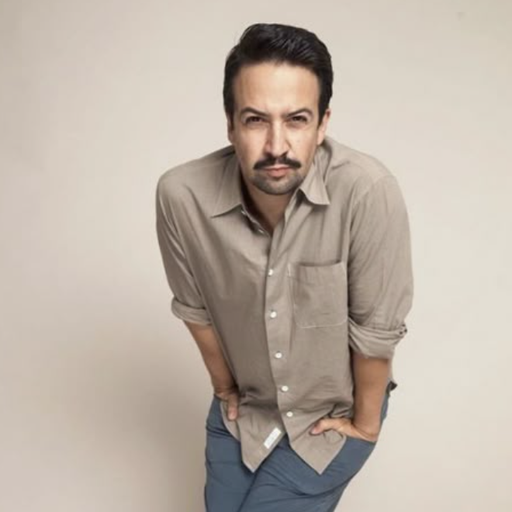
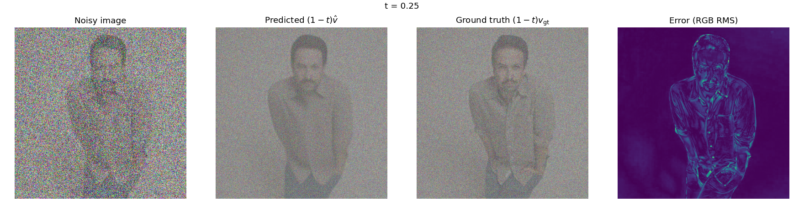
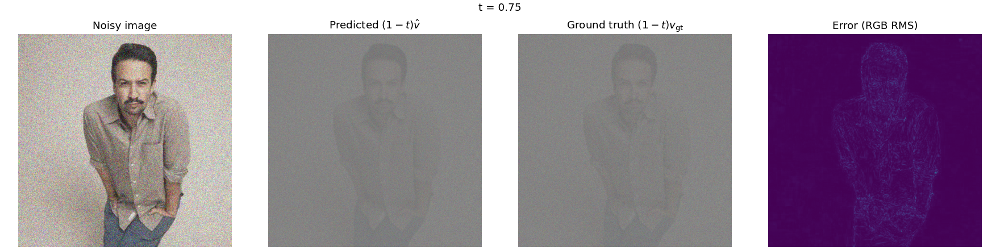
1.5 · Iterative denoising with Euler sampling
Starting from the saved t = 0.50 input, 25 updates reach t = 1. The model recomputes velocity after each update. The trajectory below includes every update, including the required states at updates 0, 5, 10, 15, 20, and 25 (t = 0.50, 0.60, 0.70, 0.80, 0.90, 1.00).
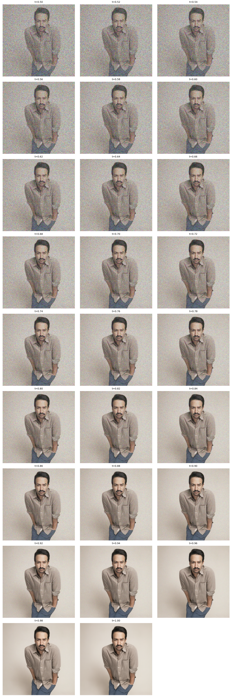
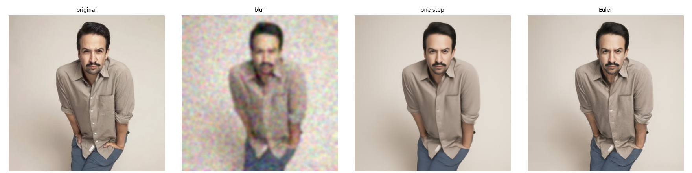
Gaussian blur leaves a softer image with residual noise. Learned denoising recovers a recognizable face and clothing; the one-step and Euler results can still change facial details. Iteration follows the changing learned field instead of assuming a single prediction remains accurate all the way to the endpoint.
Generation and classifier-free guidance
I sampled five images from independent initial noises with seeds 180–184 using the generic prompt “a high quality photo”. The unguided conditional results favor portraits but include malformed faces and inconsistent texture.

Both branches evaluate the same state and time; the unconditional branch uses the empty prompt. At w = 1 this expression reduces to the conditional velocity. Reusing the same five initial noises makes the comparison with ordinary conditional sampling meaningful.

CFG produces cleaner, more coherent faces in these examples. All five remain portraits, so the generic prompt and model prior still concentrate the subject matter. Strong guidance improves the apparent image quality here, while offering limited evidence of broader subject diversity.
Image-to-image editing
For each input, I interpolate it with noise at starting times 0.02, 0.04, 0.06, 0.10, 0.14, 0.25, and 0.50, then integrate to t = 1 with the prompt “a high quality photo”, CFG weight 7, and step size 0.02. Lower starting times permit larger edits; higher times preserve more of the input.
For my two personal test images, I chose Cam from Modern Family and a high-quality image of Hogwarts School. These give the editing procedure two different subjects: a recognizable face and a detailed architectural scene. I use both again for text-guided editing in Section 3.2.

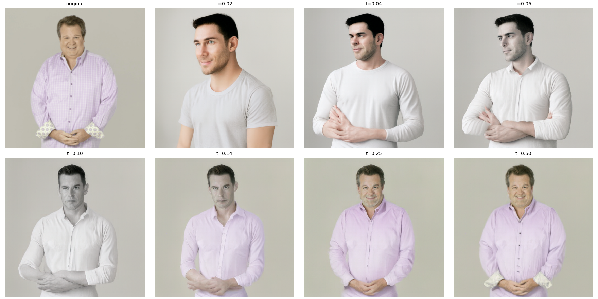
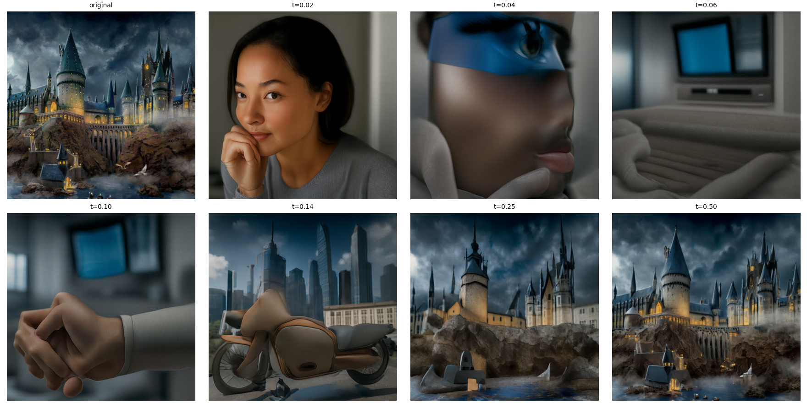
The Campanile’s outline returns at higher times. At low times the castle can become an unrelated portrait or object, while its towers and lighting are increasingly preserved as the starting time rises.
Editing hand-drawn and web images
The same sweep also applies to a web image and two images I drew by hand: a banana and a cartoon snail. The banana and snail retain their flat drawn appearance at high starting times; at low times the model reinterprets their broad colors and shapes as different objects.
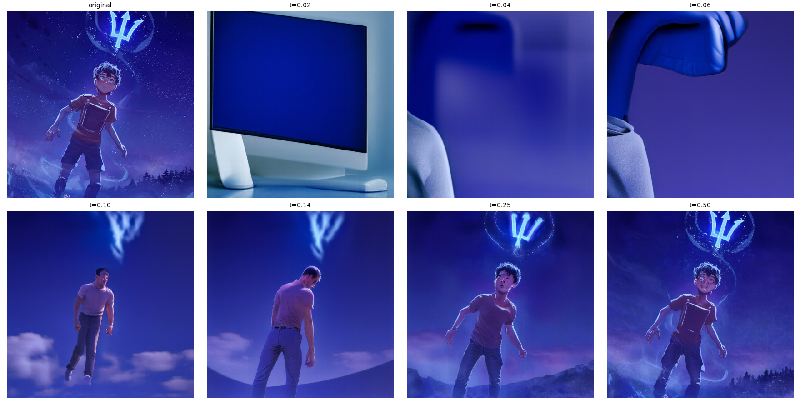
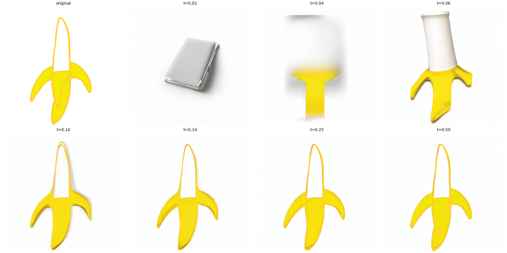
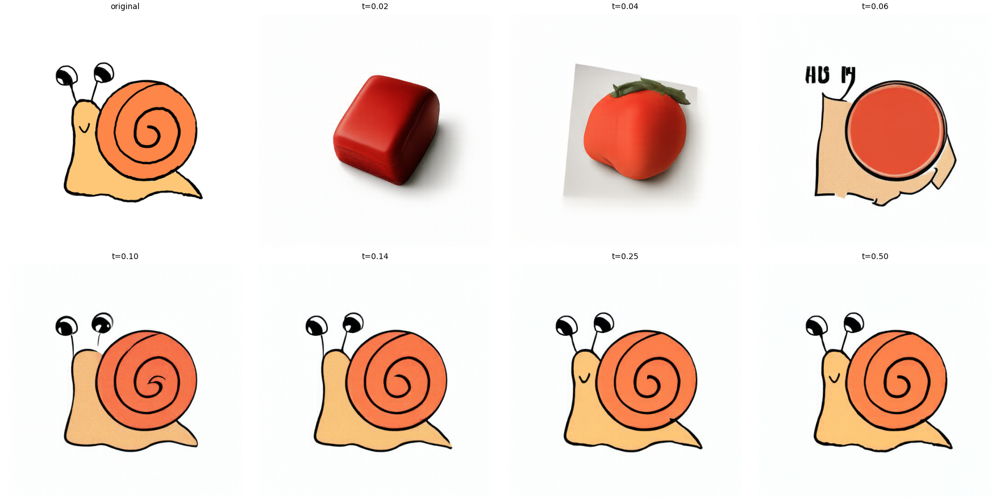
3.2 · Text-guided image editing
I repeat the same procedure with a different prompt for each image. The text can replace the subject at low starting times; at higher times it changes parts of the existing structure.
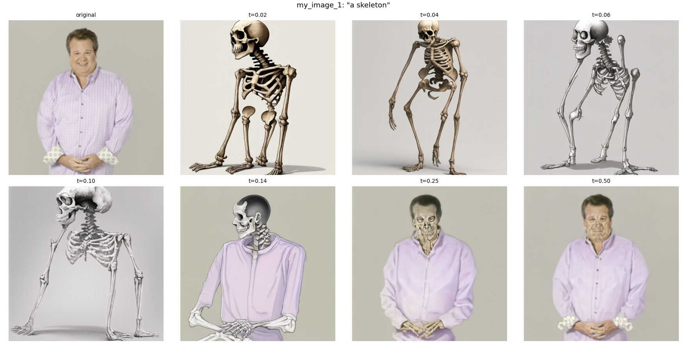
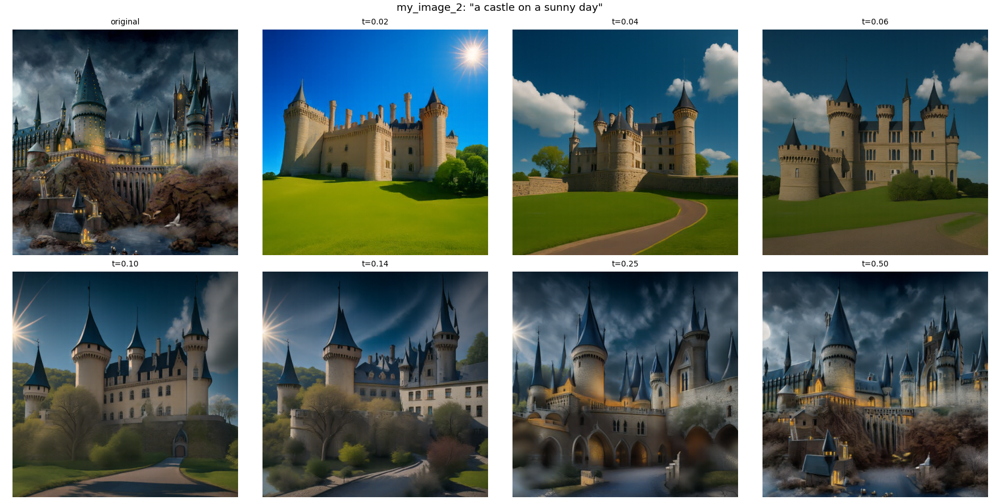
The Campanile’s vertical geometry becomes a staircase. Cam develops a skeleton face while keeping its shirt at intermediate times. The Hogwarts prompt changes the weather and lighting most strongly at low starting times, while the original dark scene dominates at t = 0.50.
Visual anagrams
R rotates the image by 180°, flipping both spatial axes. At every Euler step, I predict one guided velocity in the upright orientation and a second in the rotated orientation, rotate the second prediction back, and average them. The paired views below are the same image at two orientations.
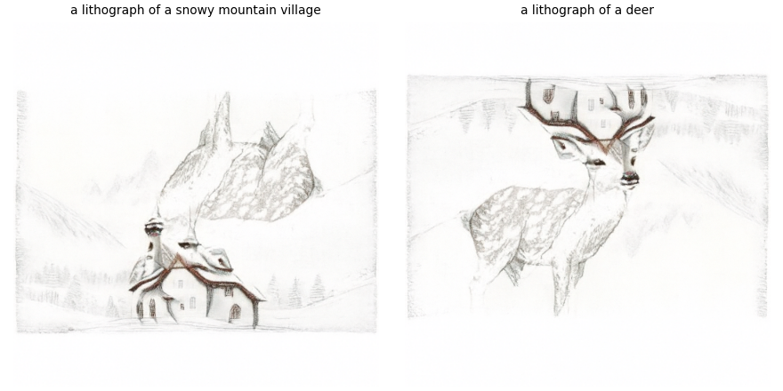
The first illusion shares bright strokes between the old man’s face and the campfire. The second uses fine pale contours for the village and deer. The interpretations have different strengths; the transformation constrains the image without guaranteeing that both prompts are equally obvious.
3.4 · Hybrid images
I combine low frequencies of one guided velocity with high frequencies of another, then use the composite velocity in each Euler update. The Gaussian low-pass uses a 265 × 265 kernel with σ = 16 at 512 × 512 resolution. Viewing at a smaller size suppresses fine detail and makes the coarse interpretation easier to see.
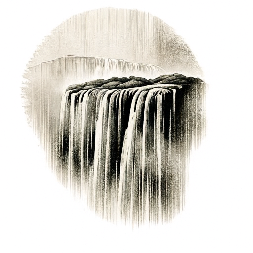
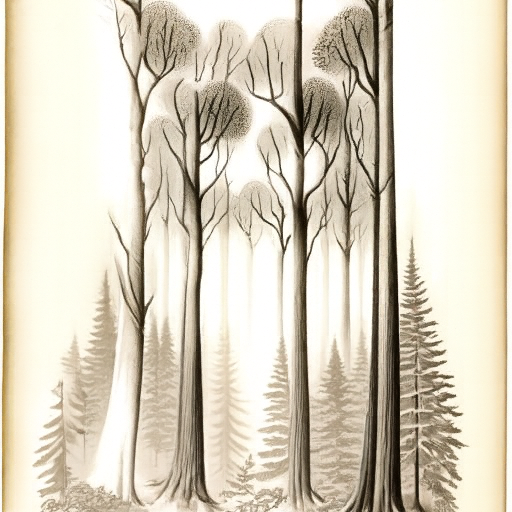
Waterfall streaks supply fine texture while the dark eye sockets and broad cranium form a skull at smaller size. The forest image similarly uses tree trunks and branches within a coarse cat-like face.
Flow matching from scratch
Training on MNIST contrasts one-step reconstruction with iterative generation. Images are normalized to [0, 1]; the training set supplies optimization batches and the test set supplies denoising examples.
Training a single-step denoising UNet
The UNet uses convolution blocks, two spatial downsampling stages, a pooled bottleneck, and upsampling blocks with skip connections. Convolutions with batch normalization and GELU extract features; skip connections preserve spatial information for reconstruction.
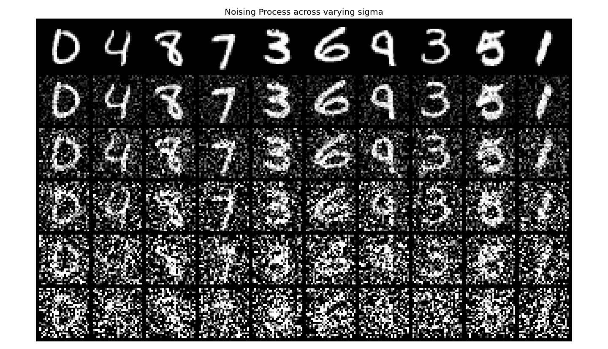
1.2.1 · Training and test-set results
The denoiser uses hidden dimension D = 128, batch size 256, Adam with learning rate 10⁻⁴, and five epochs. Fresh Gaussian noise with σ = 0.5 is added to batches during training. The test comparisons show clean inputs, noisy inputs, and model outputs.
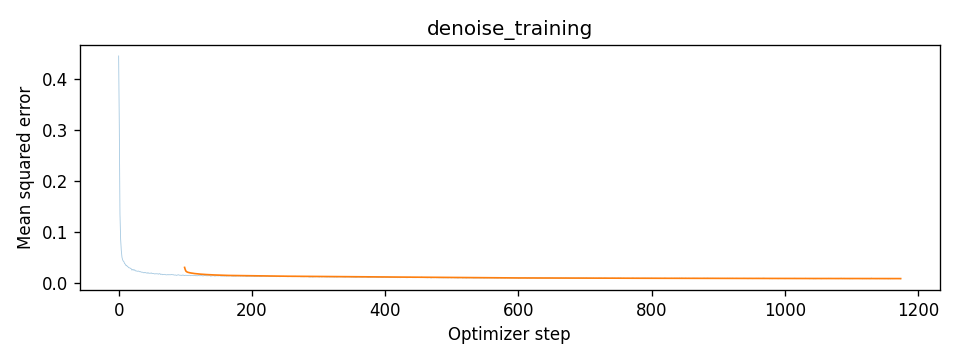
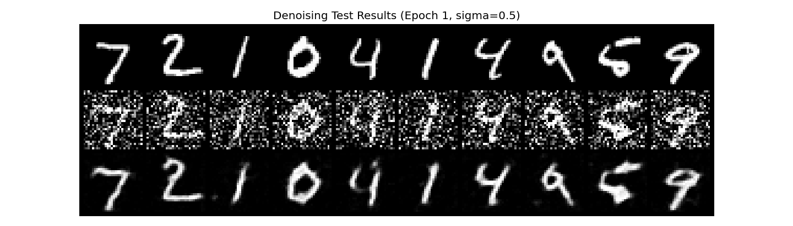
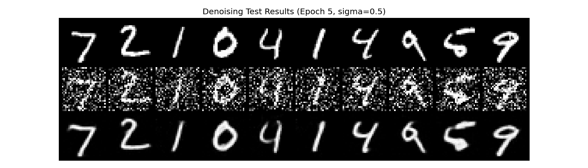
After one epoch, most digits are readable but some strokes are blurred or incomplete. At epoch 5 the strokes are cleaner and closer to the clean targets.
1.2.2 · Out-of-distribution testing
I keep the test digit fixed and vary σ over 0.0, 0.2, 0.4, 0.5, 0.6, 0.8, and 1.0. The model was trained only at σ = 0.5.
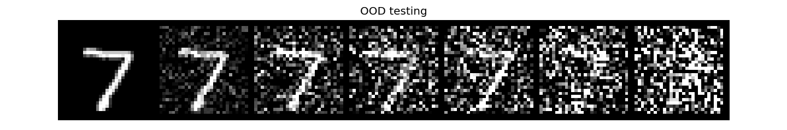
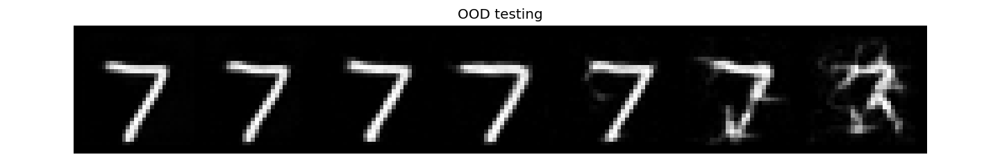
The digit remains recognizable across moderate noise levels. At the largest levels the shape distorts and additional strokes appear. A model trained at one noise level does not recover equally well at every level.
1.2.3 · Denoising pure noise
A fresh UNet is trained for five epochs with the same settings, but its input is independent Gaussian noise rather than a noised version of the target digit.
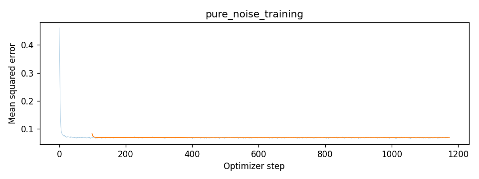
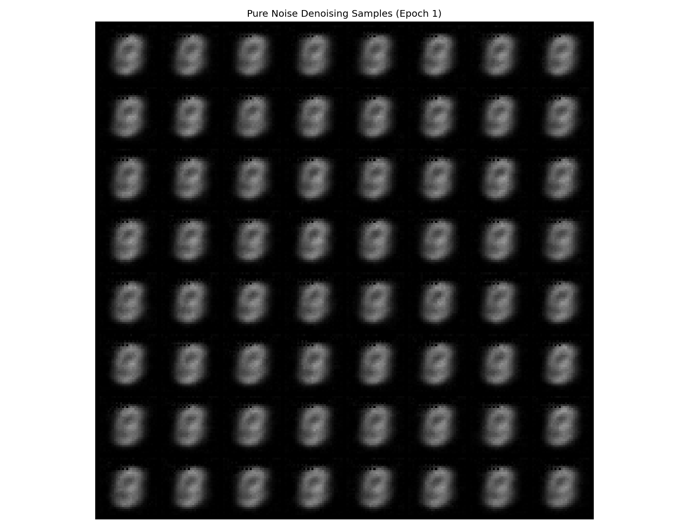
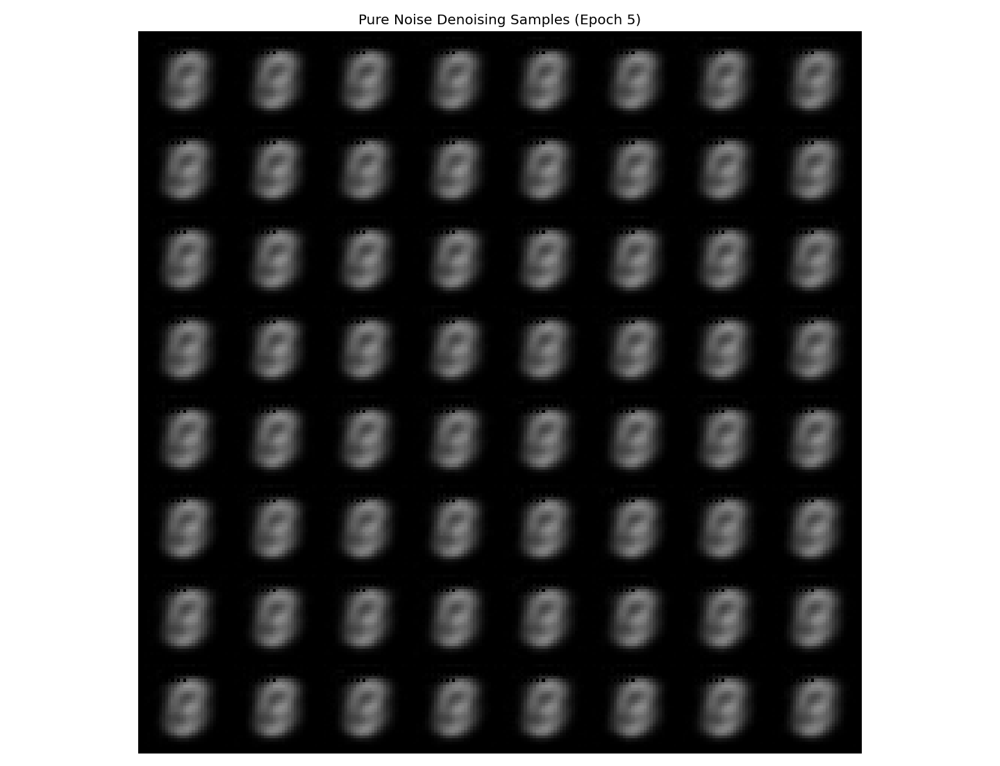
The outputs look like similar blurry digit averages rather than varied, distinct digits. The noise input is independent of the target, so it carries no information about which training digit to reconstruct. Under MSE, the best prediction is the conditional mean; here that approaches the mean MNIST image. Overlapping strokes from many digits create the central gray shape. More training sharpens the estimate of this average instead of providing a rule for selecting different digits.
Time-conditioned flow matching
Instead of predicting the clean image directly, the network predicts a velocity at an intermediate time. A randomly sampled t and fresh noise construct a new interpolated input for each batch.
Two fully connected time embeddings modulate the bottleneck and first upsampling features. Time is normalized to [0, 1]. The final convolution predicts signed, unrestricted velocities so positive and negative noise can both be removed.
| Setting | Time-conditioned model | Class-conditioned model |
|---|---|---|
| Hidden dimension / batch size | 64 / 64 | 64 / 64 |
| Optimizer / epochs | Adam / 10 | Adam / 10 |
| Initial learning rate | 0.01 | 0.01 |
| Epoch decay factor | 0.1^(1/10) | 0.1^(1/10) |
| Sampling steps | 50 Euler steps | 300 Euler steps |
| Class dropout / CFG | — | 0.1 / 5 |
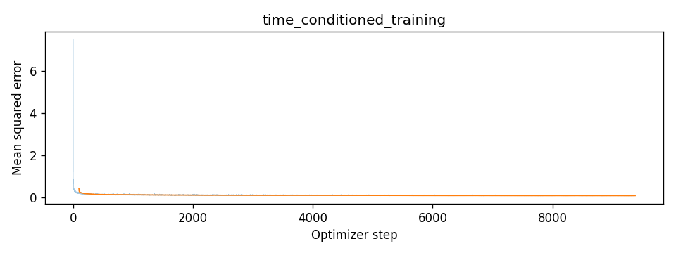
Sampling starts from Gaussian noise at t = 0, advances by vθ(x,t)/N at each of N Euler steps, and ends at t = 1. The three checkpoints show how the learned field changes over training.
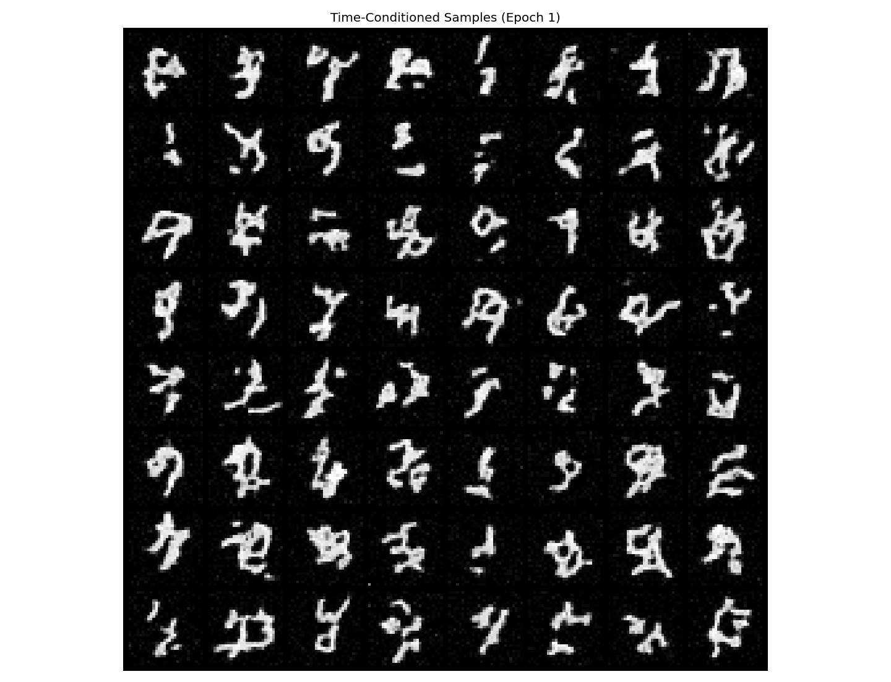
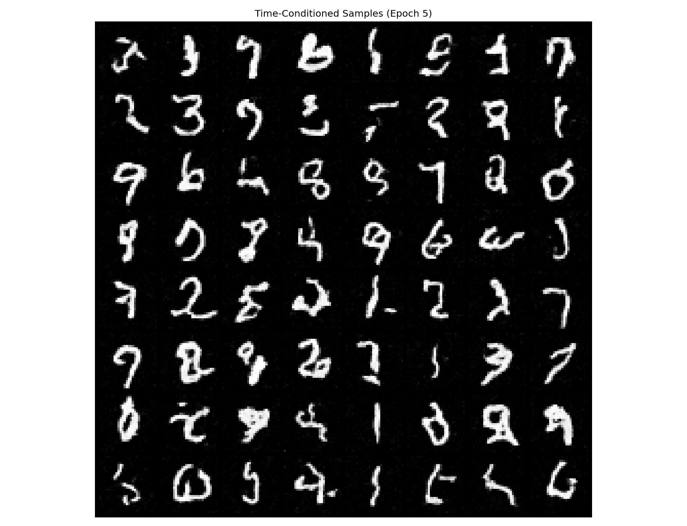
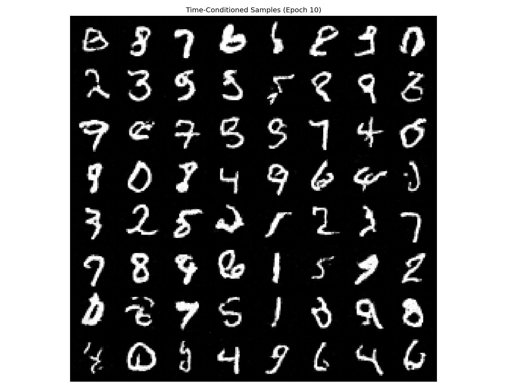
2.4–2.6 · Class conditioning and classifier-free guidance
Labels 0–9 are encoded as one-hot vectors. During training, each class vector is set to zero with probability 0.1 to train an unconditional branch. Separate class and time embeddings modulate the features at two locations.
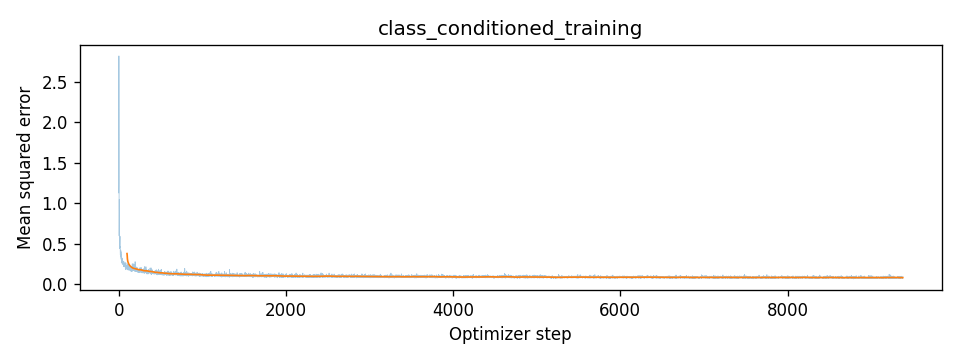
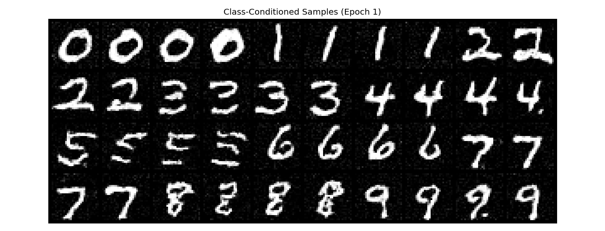
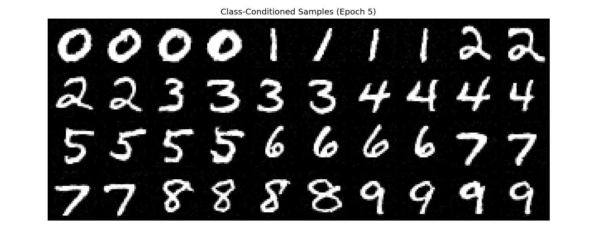
The 40 samples are ordered by label: four zeros, four ones, and so on, wrapping across rows. Class conditioning provides explicit control over the output digit. The final results contain readable digits with variations in stroke shape and slant.
Removing the learning rate scheduler
The following experiment trains the class-conditioned model without exponential learning rate decay. Its sample grid and loss curve provide a comparison with the scheduled model above.
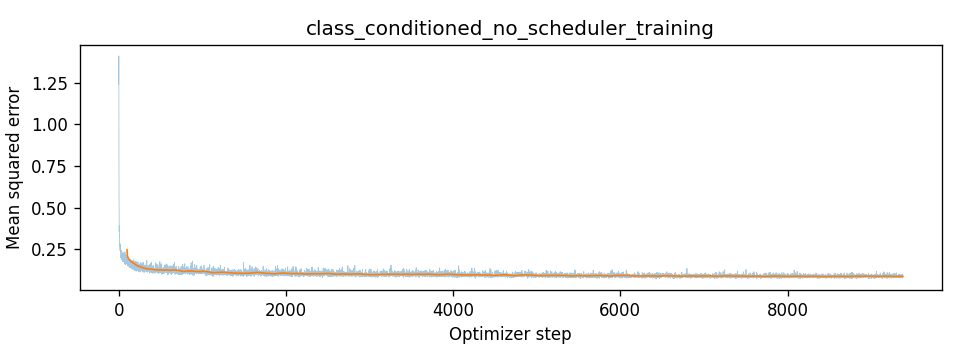
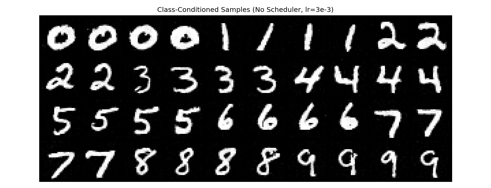
I compensated for removing exponential decay by lowering the constant Adam learning rate from the scheduled run’s initial 0.01 to 0.003 and clipping the gradient norm to 1.0 before each optimizer step. I trained a fresh D = 64 model for the same 10 epochs with batch size 64 and class dropout 0.1. Sampling uses 300 Euler steps, CFG scale 5, and seed 180.
The smaller fixed learning rate reduces update sizes throughout training, while gradient clipping limits unusually large updates. The no-scheduler samples remain recognizable across all ten classes, with variation in stroke shapes. This is a qualitative comparison of the displayed samples; no quantitative generation metric was measured.
What I learned
One-step reconstruction works when the input retains information about the target, but independent noise paired with arbitrary digits leads an MSE model toward an average. Flow matching changes the task to predicting local motion along an image/noise interpolation. Integrating this learned field supports generation, while class or text conditioning controls what emerges.
In Part A, changing the starting time controls how much an edit preserves, and combining velocities makes a single image satisfy competing interpretations. In Part B, conditioning helps produce specific digits, while the pure-noise baseline makes the limitations of direct regression visible.